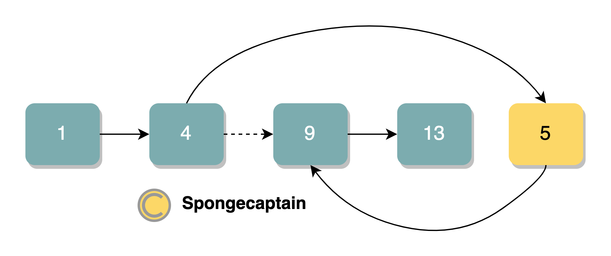
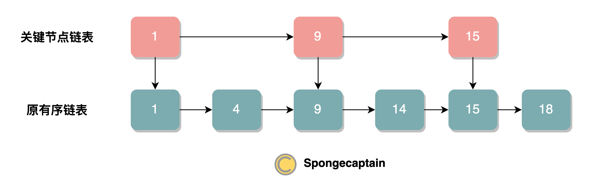
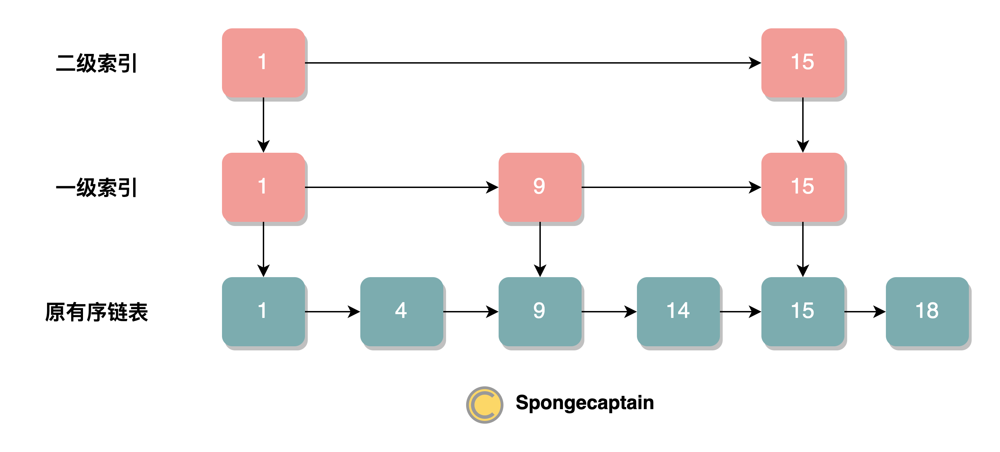
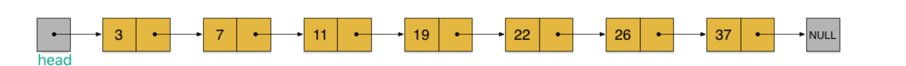
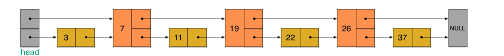
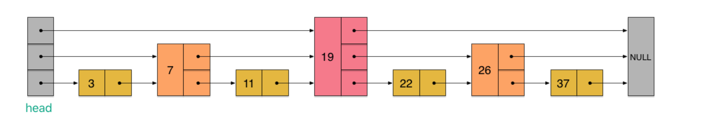

跳表作为一种数据结构，由 William Pugh 在其 1990 年发表的论文 Skip Lists: A Probabilistic Alternative to Balanced Trees 中提出。
1. 逻辑上的跳表
将跳表称为跳跃查询的链表更合适。
无论采用哪一种数据结构，如果想要提高查询的效率，势必需要引入顺序性，例如：
上述两种方式的查询时间复杂度都是 O(logN) ，但是有着各自的缺点：
- 有序数组的缺点：插入新元素时需要以二分法进行比较，时间复杂度
O(logN)，然后插入时需要将待插入位置以及后续元素整体向后搬移，时间复杂度 O(N)。可见有序数组在插入元素时开销非常大；
- B+ 树：B + 树可以说是对红黑树的改进版本，主要缺点在于具体实现比较复杂；
跳跃表基于有序链表实现，链表的插入元素和查询的效率如下：

可见链表的最大的问题就是不能使用二分法进行查询，无论是查询还是插入元素都需要依次遍历，节点元素之间的有序性根本就没用到。
为此，跳跃表吸收了 B+ 树的思想，也使用索引，只不过跳跃表的索引基于链表实现而非树实现，其实现如下图所示：

在这里，我们从原有序链表中取出奇数位置的节点作为关键节点链表，在查询或者插入比较时，先通过关键节点链表的比较再去原有序链表中进行比较。例如，如果要插入值为 13 的节点，那么原本需要比较：1、4、9、14 节点，现在只需比较 1、9、14 节点，平均可以节约 1/2 的查询时间。
不过，这里由于节点较少，查询效率的提高并不明显，另一方面，仅仅只有一层关键节点链表仅仅能提高一倍的查询效率，为了解决这个问题，我们可以建立多层关键链表节点，每一层都选取下一层的部分节点作为元素，比如我们建立两层索引的跳表的数据结构如下：

可见，最终的查询效率为原本的 2^n^ 倍，其中 n 为索引的层数，不过效率的提高有一个极限，意味当最高层索引元素只有 2 个时，已经不够再向上叠加新的索引层了，换言之，最终的查询效率至多可以到 O(logN)。
跳跃表的 skip 含义就是为了强调虽然其基于链表，但是不同于链表单向的逐个节点比较，而是可以跳跃若干个节点后进行比较（跳跃即逐个的反义词）。
不过，跳跃表和大多数索引数据结构有着一样的问题，在元素删减的时候需要维护索引数据结构，具体来说便是：
- 添加新元素节点时，如果索引不同时进行更新，那么索引就会因为没有覆盖大部分元素而降低查找效率；
- 删除新元素节点时，如果索引中有对应的节点，如果此时不删除，那么就会引发空指针异常；
删除节点时通过高层索引向低层索引层层递进，进行查找，因此时间复杂度在层数最高时为 O(logN)，逻辑也比较简单，相当于查询的过程中顺便将节点元素删除了。
添加节点时逻辑要更复杂一些，因为涉及将哪一个节点选举为高层索引的问题。每一层对于新添加节点的选举逻辑是抛硬币，也就是有 50% 的概率选举为上层链表的节点，被选举的节点需要插入到上层链表的相应位置中。然后，又进行抛硬币，判断是否要选举到上上层链表。因此一个新接入的节点即可能没有加入任何索引中，也有可能加入到所有索引中。这是一个递归的过程，直到某一次选举失败。
之前的奇偶法选举很难实现，一方面增删元素时会导致元素的奇偶性改变，另一方面，节点没有下标索引，因此很难表示某一个节点奇偶性。
为什么采用抛硬币的方式？
- 节点选举是比较困难的，因为跳跃表的节点增删操作不可预测，很难用一种有效的算法确保跳表的索引对于最底层的链表来说是均匀的；
- 如果强行追求上层节点个数恰好为下层节点个数的 2 倍，那么
- 大数据理论告诉我们，当节点元素足够多时，这种选举策略是趋近于均匀分布的；
总结一下跳表的增删元素的操作：
- 增加元素
- 新节点和各层索引节点逐一比较，确定原链表的插入位置。O(logN)
- 把索引插入到原链表。O(1)
- 利用抛硬币的随机方式，决定新节点是否提升为上一级索引。结果为 “正” 则提升并继续抛硬币，结果为 “负” 则停止。O(logN)
- 删除元素
- 自上而下，查找第一次出现节点的索引，并逐层找到每一层对应的节点。O(logN)
- 删除每一层查找到的节点，如果该层只剩下 1 个节点，删除整个一层（原链表除外）。O(logN)
总体上，跳跃表删除操作的时间复杂度是 O(logN)。
2. 实际的跳表
逻辑上的跳表有一个问题，节点信息存在冗余存储。拿下图为例：

存在冗余的节点有：
- 节点 1、节点 15 一共出现了 3 次；
- 节点 9 出现了 2 次。
为了避免存储信息的冗余，我们对于原有序链表的每一个节点不再要求其仅仅能使用一个向后的指针，而是多个。
这点类似于从二叉树转变为多路二叉树时节点可以拥有不止 2 个向后的节点引用指针。
我们先来看一个有序链表，如下图（最左侧的灰色节点表示一个空的头结点）：
下面的若干张图引来自张铁蕾。

假如我们每相邻两个节点增加一个指针，让指针指向下下个节点，如下图：

这样一来在逻辑上相当于构造了两个单向链表，通过在每一个节点中使用额外的指针避免重复使用节点。
利用同样的方式，我们可以在上层新产生的链表上，继续为每相邻的两个节点增加一个指针，从而产生第三层链表。如下图：

不过需要注意的是，每增加一层还是要为每一层单独增加该层的头节点，头节点是跳表每一层的起始节点。
你可以观察到第一个灰色块从一开始的单个节点元素逐渐增加到 3 个节点元素。
3. 跳表与其他数据结构
跳跃表和平衡二叉搜索树的区别：
- 数据结构不同：跳跃表基于链表，平衡二叉搜索树基于树；
- 索引的维护效率：跳跃表依靠抛硬币的随机方式维护索引（要求尽量平衡或平均），成本比较低，而平衡二叉搜索树需要基于特定的 reblance 算法重新调整树状结构。
- 平衡性：跳跃表的平衡性依据随机性来包装，因此最终的查找效率至多趋近于
O(logN)，但是平衡二叉树通过 rebalance 算法，能够达到 O(logN) 的查找效率；
- 范围查找的复杂性：在做范围查找的时候，平衡树比 skiplist 操作要复杂。在平衡树上，我们找到指定范围的小值之后，还需要以中序遍历的顺序继续寻找其它不超过大值的节点。如果不对平衡树进行一定的改造，这里的中序遍历并不容易实现。而在 skiplist 上进行范围查找就非常简单，只需要在找到小值之后，对第 1 层链表进行若干步的遍历就可以实现。
- 内存占用角度：从内存占用上来说，skiplist 比平衡树更灵活一些。一般来说，平衡树每个节点包含 2 个指针（分别指向左右子树），而 skiplist 每个节点包含的指针数目平均为 1/(1-p)，具体取决于参数 p 的大小。如果像 Redis 里的实现一样，取 p=1/4，那么平均每个节点包含 1.33 个指针，比平衡树更有优势。
- 算法难度：从算法实现难度上来比较，skiplist 比平衡树要简单得多了；
Hash 表的独有特点：skiplist 和各种平衡树（如 AVL、红黑树等）的元素是有序排列的，而哈希表不是有序的。因此，在哈希表上只能做单个 key 的查找，不适宜做范围查找。所谓范围查找，指的是查找那些大小在指定的两个值之间的所有节点。
查询效率的比较：查找单个 key，skiplist 和平衡树的时间复杂度都为 O(logN)，大体相当；而哈希表在保持较低的哈希值冲突概率的前提下，查找时间复杂度接近 O (1)，性能更高一些。所以我们平常使用的各种 Map 或 dictionary 结构，大都是基于哈希表实现的。
4. 手写一个 Skip List
首先是节点类，这里 Skip List 模型中的节点有着上下左右，共四个节点的引用指针，当然在很多应用中并不需要这么多指针。
1
2
3
4
5
6
7
8
9
10
11
12
13
14
15
16
17
18
19
20
21
22
23
24
25
26
27
28
29
30
31
32
33
34
35
36
37
38
39
40
41
42
43
44
45
46
47
48
49
50
51
52
|
public class Node<T>{
public int key;
public T value;
public Node<T> up, down, left, right;// 上下左右 四个指针
public static final int HEAD_KEY = Integer.MIN_VALUE; // 负无穷
public static final int TAIL_KEY = Integer.MAX_VALUE; // 正无穷
public Node(int key, T value) {
this.key = key;
this.value = value;
}
//key 与 value 的 get/set 方法
public int getKey() {
return key;
}
public void setKey(int key) {
this.key = key;
}
public T getValue() {
return value;
}
public void setValue(T value) {
this.value = value;
}
//节点相同的逻辑是 key 与 value 都应当相同，或者直接引用地址相同
public boolean equals(Object o) {
if (this==o) {//引用相同
return true;
}
if (o==null) {
return false;
}
if (!(o instanceof Node<?>)) {//类型一定要为 Node
return false;
}
Node<T> ent;
try {
ent = (Node<T>) o; // 检测类型
} catch (ClassCastException ex) {
return false;
}
return (ent.getKey() == key) && (ent.getValue() == value);
}
//toString
@Override
public String toString() {
return "key-value:"+key+"-"+value;
}
}
|
在之前的章节有提到逻辑上的跳表结构存在节点数据冗余的问题，一种解决办法已经提到了，每一个节点可以使用多个向后的指针。不过这里采用另一种方式，顶层节点的 value 设置为 null，仅仅保存 key 值，这样一来在保持简单逻辑的情况下，能够减少节点数据冗余。
这种思路类似于 B+ 树中只有 leaf page 存储行数据，其他节点仅仅存储指向下一层节点的指针以及索引。
1
2
3
4
5
6
7
8
9
10
11
12
13
14
15
16
17
18
19
20
21
22
23
24
25
26
27
28
29
30
31
32
33
34
35
36
37
38
39
40
41
42
43
44
45
46
47
48
49
50
51
52
53
54
55
56
57
58
59
60
61
62
63
64
65
66
67
68
69
70
71
72
73
74
75
76
77
78
79
80
81
82
83
84
85
86
87
88
89
90
91
92
93
94
95
96
97
98
99
100
101
102
103
104
105
106
107
108
109
110
111
112
113
114
115
116
117
118
119
120
121
122
123
124
125
126
127
128
129
130
131
132
133
134
135
136
137
138
139
140
141
142
143
144
145
146
147
148
149
150
151
152
153
154
155
156
157
158
159
160
161
162
163
164
165
166
167
168
169
170
171
172
173
174
175
176
177
178
179
180
181
182
|
public class SkipList<T> {
//在每次插入元素后，即使有新的顶层生成，head、tail 还是指向最顶层的 head、tail，此顶层的 head、tail 可以通过 down 指针得到
private Node<T> head, tail;//head 与 tail
private int nodeNumber;//节点总数
private int listLevel;//层数
private Random random;// 用于投掷硬币
private static final double PROBABILITY = 0.5;//对新插入元素向上选举的概率设定为 0.5
public SkipList() {
// TODO Auto-generated constructor stub
random = new Random();
clear();
}
/**
*清空跳跃表
* */
public void clear() {
head = new Node<T>(Node.HEAD_KEY, null);
tail = new Node<T>(Node.TAIL_KEY, null);
horizontalLink(head, tail);
listLevel = 0;
nodeNumber = 0;
}
public boolean isEmpty() {
return nodeNumber == 0;
}
public int size() {
return nodeNumber;
}
/**
* 在最下面一层，找到要插入的位置前面的那个 key
* */
private Node<T> findNode(int key) {
Node<T> p = head;
while (true) {
while (p.right.key != Node.TAIL_KEY && p.right.key <= key) {//先遍历顶层元素
p = p.right;
}
if (p.down != null) {//通过 p.down 得到下一层
p = p.down;
} else {//p.down 说明已经遍历到最后一层，此时直接选择节点插入到当前节点后即可（注意此时 p 一定不符合 while 条件）
break;
}
}
return p;
}
/**
* 查找是否存储key，存在则返回该节点，否则返回null
* */
public Node<T> search(int key) {
Node<T> p = findNode(key);
if (key == p.getKey()) {
return p;
} else {
return null;
}
}
/**
* 向跳跃表中添加key-value，这是最跳表实现最复杂的地方
* */
public void put(int k, T v) {
//在最下面一层，找到要插入的位置前面的那个 key
Node<T> p = findNode(k);
//如果key值相同，替换原来的 value 即可结束
if (k == p.getKey()) {
p.value = v;
return;
}
//如果 key 不相同，那么在最底层插入该节点，此时仅仅需要调用 backLink() 进行插入即可
Node<T> q = new Node<T>(k, v);
backLink(p, q);
int currentLevel = 0;//当前所在的层级是0
//抛硬币
while (random.nextDouble() >= PROBABILITY) {
//如果超出了高度，需要重新建一个顶层，注意新的顶层与原顶层之间需要通过指针联系
if (currentLevel >= listLevel) {
//新建顶层的初始化
listLevel++;
Node<T> p1 = new Node<T>(Node.HEAD_KEY, null);
Node<T> p2 = new Node<T>(Node.TAIL_KEY, null);
horizontalLink(p1, p2);
//新键顶层和底层元素建立指针联系
vertiacallLink(p1, head);
vertiacallLink(p2, tail);
head = p1;
tail = p2;
//新的顶层构建完毕后，顶层只有新的 head 与 tail 节点
}
//总之，通过上面的逻辑确保了下面的逻辑中层数一定是够用的
//寻找当前层 p 后面且 p.up != null 的 p 元素，如果存在这个元素，说明 q 节点被选举为上层节点后，应当置于 p.up 后
while (p.up == null) {
p = p.left;
}
p = p.up;
Node<T> e = new Node<T>(k, null);//为了减少数据冗余，这里只保存 key，Value 设置为 null 的 e,key 与原 p 相同
backLink(p, e);//将e插入到p的后面
vertiacallLink(e, q);//将e和q上下连接
q = e;
currentLevel++;//层级数递增
}
nodeNumber++;//节点数递增
}
//node1后面插入node2
private void backLink(Node<T> node1, Node<T> node2) {
node2.left = node1;
node2.right = node1.right;
node1.right.left = node2;
node1.right = node2;
}
/**
* 水平双向连接
* */
private void horizontalLink(Node<T> node1, Node<T> node2) {
node1.right = node2;
node2.left = node1;
}
/**
* 垂直双向连接
* */
private void vertiacallLink(Node<T> node1, Node<T> node2) {
node1.down = node2;
node2.up = node1;
}
/**
* 按照 key 的升序依次打印出原始数据
* */
@Override
public String toString() {
if (isEmpty()) {
return "跳跃表为空！";
}
StringBuilder builder = new StringBuilder();
Node<T> p = head;
while (p.down != null) {
p = p.down;
}
while (p.left != null) {
p = p.left;
}
if (p.right != null) {
p = p.right;
}
while (p.right != null) {
builder.append(p);
builder.append("\n");
p = p.right;
}
return builder.toString();
}
/**
* 按照层序依次从左到右打印出所有的节点，这可以详细地表示出具体的数据结构
*/
public void layerTraverse() {
Node<T> headOnCurrentLayer = head;
Node<T> currentNode = head;
int i = 0;
while (headOnCurrentLayer != null) {
i++;
System.out.println("第 " + i + " 层");
while (currentNode != null) {
System.out.println(currentNode);
currentNode = currentNode.right;
}
headOnCurrentLayer = headOnCurrentLayer.down;
currentNode = headOnCurrentLayer;
}
}
}
|
测试代码：
1
2
3
4
5
6
7
8
9
10
11
12
13
14
15
16
17
|
public class Test {
public static void main(String[] args) {
SkipList<String> list = new SkipList<String>();
//添加入新元素
list.put(2, "spongecaptainR_2");
list.put(1, "spongecaptain_1");
list.put(3, "spongecaptain_3");
list.put(1, "spongecaptain_1_1");//测试同一个key值
list.put(4, "spongecaptain_4");
list.put(6, "spongecaptain_6");
list.put(5, "spongecaptain_5");
System.out.println(list);//跳跃表按照 key 顺序进行打印
System.out.println("------------------------------");
list.layerTraverse();//跳跃表按照层级结构遍历，每一层的遍历都是从左到右的遍历
}
}
|
控制台打印出：
1
2
3
4
5
6
7
8
9
10
11
12
13
14
15
16
17
18
19
20
21
22
23
24
25
26
27
28
29
30
31
32
33
34
|
key-value:1-spongecaptain_1_1
key-value:2-spongecaptainR_2
key-value:3-spongecaptain_3
key-value:4-spongecaptain_4
key-value:5-spongecaptain_5
key-value:6-spongecaptain_6
------------------------------
第 1 层
key-value:-2147483648-null
key-value:2-null
key-value:2147483647-null
第 2 层
key-value:-2147483648-null
key-value:2-null
key-value:4-null
key-value:6-null
key-value:2147483647-null
第 3 层
key-value:-2147483648-null
key-value:1-null
key-value:2-null
key-value:4-null
key-value:6-null
key-value:2147483647-null
第 4 层
key-value:-2147483648-null
key-value:1-spongecaptain_1_1
key-value:2-spongecaptainR_2
key-value:3-spongecaptain_3
key-value:4-spongecaptain_4
key-value:5-spongecaptain_5
key-value:6-spongecaptain_6
key-value:2147483647-null
|
注意：由于随机性，跳表的层数可以是 1- 4 层，每次执行的结果可能都不相同，但是特征是不变的：
- 每一层都有相同 key 的 head、tail 节点，但是注意它们是不同的节点，即引用地址不同；
- 每一层的所有节点都是按照 key 从小到大升序排序的；
- 除了最后一层链表的节点的 value 不为 null，其余所有节点的 value 均为 null；
- 随机性并不会影响最后一层链表有哪些节点以及节点的顺序；
5. 引用说明
部分引用：